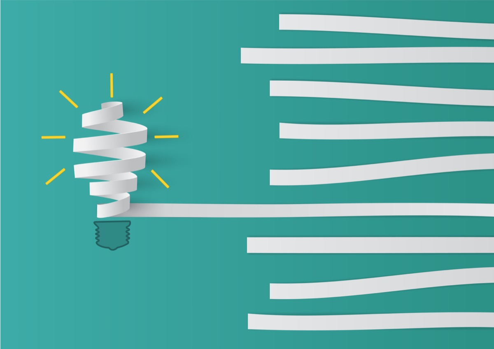

2022/10/14 (更新日:2022/10/14)
[完全初心者向け]
プログラミングて結局なんなの？
PROGRAMMING


<--プログラミングやってみようか迷ってる人 「友達からプログラミング勉強したら儲かるって言われたけど難しそうだし、たくさん言語とか覚えなくちゃいけなくて大変そうだな。どこから手出したらいいかさっぱりわからない、、、」
このblogではそういった疑問を解決していきます。
プログラミングは何から学ぶべきか？webサイトを作る知識をつける。
プログラミング学習の道標
- ①目標設定 : webサイトを一から作れるようになる！
- ②環境準備 : パソコン・エディターの準備
- ③学習理解 : 基礎学習->サイトの模写->復習、、、
- ④今後(僕の場合) : 他の言語の取得
記事の信頼性
正直筆者はプログラミング歴が浅くバカです。こんな僕でも今見てるサイトを一から作成しています。
htmlとcssだけですが、、、jqueryもこれから勉強していこうと思います
僕の学習プランで進めていけば必ずかっこいいwebサイトを自分の力で作れるようになります！一緒に頑張りましょう！
読者さんへの前置きメッセージ
この記事では「プログラミングしてみたいけど何をすればいいかわからない」という方に向けて書いています。
この記事を読んで、「自分が未来でプログラミングを使いこなしている」イメージをもってもらえたら嬉しいです。一歩ずつ着実に進めていきましょう！
それではさっそく、行っていきましょう
①目標設定 : webサイトを一から作れるようになる！
目標設定は自分の力でwebサイトを一つ作ってみることがいいと思います。
twitterとかではよく1ヶ月で数十万稼いだとかいう人いますが、そういう人は実際ほとんどいないので地道に頑張っていきましょう！
有料のテンプレートも自分で作れちゃう！？
Googleのサイト検証ツールで、サイトのコードソースをそのまま手に入れることができます。
もちろんこのサイトもどんなコードで書かれているか、みることができます。
ぜひ見てみてください！
やり方はこの記事に載ってます
すみません、話がそれました。まー言いたいことはプログラミングの知識があると他の人はお金払ってるのに自分は払わなくてもいいという優越感を得られます。
これプログラミングを勉強する上ですごいモチベーションになりません？
②環境準備 : パソコン・エディターの準備
やっぱりパソコンは迷いますよね？
貯金に余裕があるなら、Macbookがおすすめです。エンジニアはmacが多いです。でも全然windowsでも問題ありません。お金に余裕があったらmacにするべし？
一応僕はMacbookAirの13インチを使っています。今のところそんなに困ったことはないです。
環境準備
パソコンが用意できたらまず初めにvsコードを入れるべきです。vsコードとは簡単にいうと、webサイトのコードを書くためのアプリです。vsコードの入れ方はこちらの記事に書いてあります。
webサイトはhtmlとcssという言語で主にできています。vsコードをパソコンに入れて、vsコードを開きその中でhtmlファイルやcssファイルが作れます。そのファイルをサーバーにのせることでwebサイトが公開されます。
上記の内容はちょっとむずいので頭の片隅に置いといてください笑
③学習理解 : 基礎学習->サイトの模写->復習を繰り返す
おすすめの学習サイト
基礎がわからないとほんとにきついです。ぼくは「progate」という学習サービスで基礎を身につけました。月額1000円するんですけどそこに投資する価値は十分あると思います。
そこで学ぶ言語の順番は！
- ① : HTML
- ② : CSS
- ③ : サイトの模写
- ④ : (jquery)
html
htmlはサイトのおおまかな構成を作る言語です。まーやってみないと想像もつかないのでとりあえずprogateゲートの無料版をやってみてください。
css
cssはサイトのデザインをつける言語です。色とか横幅とか高さとかを決めます。
jquery
jqueryはサイトのmenuバーを押したらmenuがでてくるなどの機能をつける言語です。
jqueryは出来なくてもいいのでまずはhtmlとcssを何回も復習して自分のものにしてください。htmlとcssができるようになったら下記の記事の初級編から模写してみてください。
④今後(僕の場合) : 他の言語の取得

自分の場合はゲームを作りたいので、ゲームを作るための言語を学んでいきます。あとサイトにSQLやnode.jsでログイン機能をつけてみたりしようと思います。
この記事を読んでるそこの君はまずは完璧にprogateをこなしてhtml・cssを取得しwebサイトを作ってみてwebデザインの仕事を引き受けてみたりするのもいいでしょう。まー自分のやりたいことをするのがベストだね。
上手く事が運んだら僕に連絡してね笑
よくある質問 : Twitterからも無料で募集します


よく読まれてる記事
archive
- 2022 11月
- 2022 10月